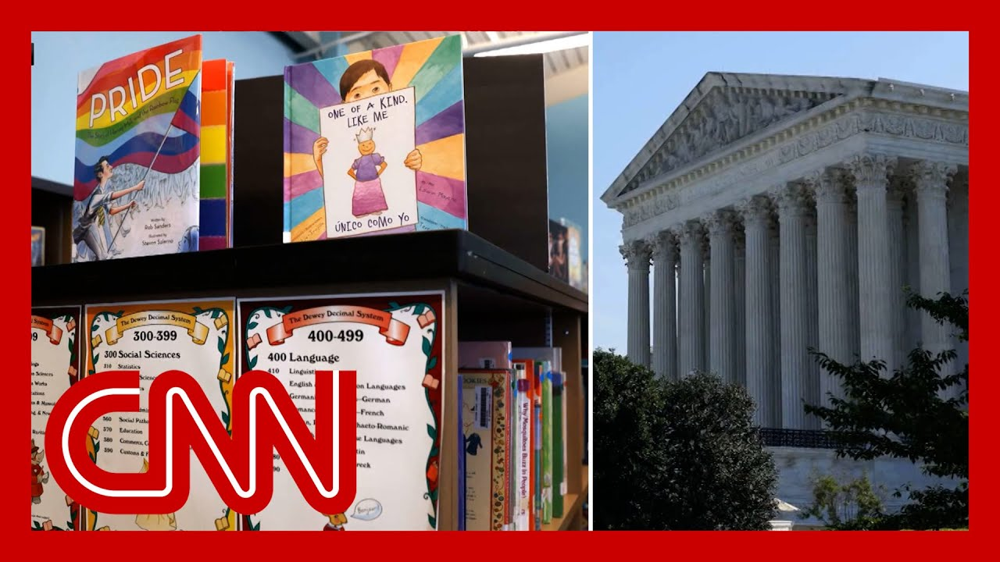

【CNN News 20250628 美国最高法院支持学校退出LGBTQ书籍课程】
Summary: The Supreme Court ruled in favor of religious parents in Maryland who sought to opt their children out of LGBTQ-inclusive school lessons, a decision celebrated by conservatives but criticized by the ACLU for disrupting secular education and fostering division.
摘要： 美国最高法院裁定支持马里兰州宗教家长要求孩子退出LGBTQ包容性课程的权利，这一决定受到保守派欢迎，但被美国公民自由联盟批评为破坏世俗教育并加剧分裂。

⏱️ Estimated Reading Time: 12 min
📚 六级生词 📚 雅思生词 📚 托福生词 📚 专八生词 📚 SAT生词 📚 考研生词 📚 GRE生词 📚 高考生词
The courts sided with a group of religious Maryland parents who want the option to keep their elementary age children out of lessons involving books with LGBTQ content.
法院支持马里兰州一群宗教家长的选择权，他们希望让小学年龄段的孩子退出涉及LGBTQ内容的课程。
President Trump celebrated this as a win for the court's conservative majority.
特朗普总统将此视为法院保守派多数的一次胜利。
It's really a ruling for parents.
这实际上是一项支持家长的裁决。
They lost control of the schools.
他们失去了对学校的控制。
They lost control of their child.
他们失去了对自己孩子的控制。
And this is a tremendous victory for parents.
这对家长来说是一次巨大的胜利。
We're going to talk to folks on both sides of this issue.
我们将与这一问题的双方人士进行讨论。
Let's bring in Cecilia Wong, the National Legal Director for the American Civil Liberties Union.
让我们请来美国公民自由联盟全国法律总监Cecilia Wong。
Cecilia, the ruling does not remove these books from the shelves.
Cecilia，这项裁决并未将这些书籍从书架上移除。
It doesn't stop schools from teaching them.
它也没有阻止学校教授这些内容。
Why do you think this was a bad decision?
为什么你认为这是一个糟糕的决定？
Well, thanks, Jake, for having me on.
谢谢邀请我，Jake。
I think today's decision by the Supreme Court is unfortunately a drastic break from decades of precedent.
我认为最高法院今天的决定不幸地打破了数十年的先例。
It has the potential to sew real chaos and disruption in public schools across America.
它有可能在全美公立学校引发真正的混乱和破坏。
For the first time under the Supreme Court's order today, parents with religious objections are empowered to pick and choose from a circular public school curriculum, which interferes with the school district's legitimate educational purposes and its ability to operate schools without disruption.
根据最高法院今天的命令，有宗教异议的家长首次有权从公立学校课程中挑选内容，这干扰了学区合法的教育目标及其无干扰运营学校的能力。
And ironically, this ruling comes in a case where the curriculum is designed to foster civility and help young learners foster understanding across differences and agree and disagree with civility.
讽刺的是，这项裁决涉及的课程本意是培养文明礼仪，帮助年轻学习者理解差异并以文明方式表达同意或反对。
So I think it's a very unfortunate decision that really is at odds with the history of the Court's presidents on the First Amendment.
因此，我认为这是一个非常不幸的决定，与最高法院在宪法第一修正案上的历史立场相矛盾。
Let's read some of the decision written by Justice Alito.
让我们阅读阿利托大法官撰写的部分裁决内容。
He talks about one of the books in question.
他谈到了其中一本争议书籍。
It's called Uncle Bobby's Wedding.
这本书名为《鲍比叔叔的婚礼》。
It's about a same-sex wedding.
它讲述了一场同性婚礼。
Alito writes, quote, it presents acceptance of same-sex marriage as a perspective that should be celebrated.
阿利托写道：“它将接受同性婚姻作为一种值得庆祝的观点呈现。”
Other Americans wish to present a different moral message to their children and their ability to present that message is undermined when the exact opposite message is positive reinforced in the public school classroom, unquote.
“其他美国人希望向孩子传递不同的道德信息，而当公立学校课堂积极强化相反信息时，他们传递这一信息的能力就被削弱了。”
So Alito's argument is that parents should have the final word when it comes to teaching their children about morality, that they should have the final word when it comes to their education, especially if the government, the school, is teaching something that contradicts their religion.
因此，阿利托的论点是，家长在教导孩子道德方面应有最终决定权，在教育方面也应有最终决定权，尤其是当政府或学校教授的内容与他们的宗教相矛盾时。
Why is that a problem for you?
这对你来说为何是个问题？
Well, as Justice Sotomayor pointed out in her dissent, which includes the entirety of that book, Uncle Bobby's Wedding, points out what really happened here is that the Montgomery County Schools District decided to have books that were inclusive on LGBT themes, as well as other themes about inclusion of people of different races and people of different religions.
正如索托马约尔大法官在她的异议中指出的（其中包含了《鲍比叔叔的婚礼》全书），蒙哥马利县学区决定采用包含LGBT主题以及其他关于不同种族和宗教人群包容性主题的书籍。
And the issue is that these were all age-appropriate materials that portrayed an inclusive attitude toward people from across differences.
问题在于这些都是适合年龄的材料，展现了对差异人群的包容态度。
The book itself, whether parents object to it or not, they can teach their kids what they want and react to those books at home.
无论家长是否反对这本书，他们都可以在家按自己的意愿教导孩子并对这些书做出反应。
But in the classroom, up until today's decision, the Supreme Court has always said that as to a secular public school curriculum, parents don't get to pick and choose in that secular curriculum.
但在课堂上，直到今天的裁决前，最高法院一直认为对于世俗公立学校课程，家长无权从中挑选内容。
What happened in the case below is that Montgomery County at first let parents opt out of this curriculum.
此案的情况是，蒙哥马利县最初允许家长选择退出这一课程。
And what they saw was rampant absenteeism where kids were not in class, sometimes kids would skip the entire school day.
他们看到的是普遍的缺勤现象，孩子们有时会整天逃课。
And there was a real stigmatizing effect on kids whose parents might be gay or lesbian.
这对父母可能是同性恋的孩子产生了实际的污名化影响。
The whole point of the school curriculum and of a secular public school is that people must listen and learn to agree or disagree with civility.
学校课程和世俗公立学校的核心在于，人们必须倾听并学会以文明方式表达同意或反对。
And I think the Supreme Court's decision today is really going to disrupt the whole central idea of secular public education in this country.
我认为最高法院今天的决定将真正破坏美国世俗公共教育的核心理念。
You don't have to agree with everything that you learn in school or that you're exposed to in school.
你不必同意在学校学到或接触到的所有内容。
But you do until today, you did have to sit and listen and engage with others in the classroom.
但直到今天，你确实必须坐在教室里倾听并与他人互动。
People are free to disagree with these materials.
人们可以自由反对这些材料。
And unfortunately, I think the Supreme Court's decision today really upends the whole idea of secular public school curriculum and has the potential to so chaos.
不幸的是，我认为最高法院今天的决定彻底颠覆了世俗公立学校课程的理念，并有可能引发混乱。
So silly along with the ACLU, thank you so much.
因此，连同美国公民自由联盟，非常感谢。
Appreciate it.
感谢。
Let's talk now with one of the parents who first brought this case in Montgomery County Maryland.
现在让我们与马里兰州蒙哥马利县最初提起此案的一位家长交谈。
Mom Grace Morrison, her attorney Michael O'Brien joins us as well.
Grace Morrison妈妈，她的律师Michael O'Brien也加入了我们。
So Grace, thanks so much for joining us.
Grace，非常感谢你加入我们。
Really appreciate it.
非常感谢。
The State of Detroit County first removed the opt out choice in 2023.
底特律县于2023年首次取消了退出选择权。
Your mom, a public school kids in Montgomery County, why did you bring this case?
你的妈妈，蒙哥马利县公立学校的孩子，你为何提起此案？
I brought this case because my husband and I have an adopted daughter from Ukraine.
我提起此案是因为我和丈夫有一个来自乌克兰的养女。
She had been in the public school systems since for seven years.
她在公立学校系统已经待了七年。
She is a child with special needs.
她是一个有特殊需求的孩子。
She has Down syndrome.
她患有唐氏综合症。
And we became aware that in her special needs classroom, they were presenting books on sexuality and heavy topics of gender ideology.
我们意识到在她的特殊需求课堂上，他们正在展示关于性和性别意识形态的沉重话题的书籍。
And we became very alarmed by this, then to find out that we could no longer opt out of these materials nor be even informed of what she was being taught.
我们对此感到非常震惊，随后发现我们既无法选择退出这些材料，甚至无法得知她被教授的内容。
The books were being presented and discussed.
这些书被展示和讨论。
So we had to make the very difficult decision to remove her from the school system.
因此我们不得不做出艰难决定，将她从学校系统中带离。
And that came at a great personal cost.
这给我们带来了巨大的个人代价。
And we have been walking through this case.
我们一直在处理此案。
So today we are really rejoicing to have those by the Supreme Court to have those rights restored.
因此今天我们非常高兴最高法院恢复了这些权利。
So how much of this was because of your child's special needs and how much was it because of whatever religious objections you and your husband might have?
那么，这在多大程度上是因为你孩子的特殊需求，又在多大程度上是因为你和丈夫可能的宗教异议？
For our family, this material was directly opposed to our religious beliefs.
对我们家庭来说，这些材料直接违背了我们的宗教信仰。
We are Catholic and things that were being presented were in complete conflict with our Catholic faith.
我们是天主教徒，所展示的内容与我们的天主教信仰完全冲突。
And we were raising our daughter in the Catholic faith.
我们正在以天主教信仰抚养女儿。
So it was especially difficult for a child with special needs to not be able to understand why the teacher was teaching one thing and then to come home and be told something else.
因此，对于一个有特殊需求的孩子来说，无法理解为什么老师教授一件事，回家后却被告知另一件事，这尤其困难。
It just added another level of difficulty.
这增加了另一层困难。
So I'm going to put up some of the books now.
现在我将展示一些书籍。
Let's show them if we can.
如果可以的话，让我们展示它们。
One is about a puppy lost at a pride parade.
一本是关于在骄傲游行中迷路的小狗。
One is about a girl attending her uncle's wedding to his partner, his male partner.
一本是关于一个女孩参加她叔叔与男性伴侣的婚礼。
The other one is about a young person discovering that they are trans.
另一本是关于一个年轻人发现自己跨性别的故事。
These are story books.
这些都是故事书。
Now obviously your child has specific learning needs that you were concerned about.
显然你的孩子有你关心的特定学习需求。
Let's broaden it out for a second if we could.
如果可以的话，让我们稍微扩展一下。
We just heard the Cecilia Wong from the ACLU say these books are about teaching tolerance and acceptance.
我们刚刚听到美国公民自由联盟的Cecilia Wong说这些书是关于教导宽容和接纳。
Why is that a bad thing?
为什么这是一件坏事？
That's basically the argument we just heard from Cecilia Wong.
这基本上是我们刚从Cecilia Wong那里听到的论点。
The first thing is that it wasn't just a simple reading of story books.
首先，这不仅仅是简单地阅读故事书。
It was presented in her language arts class.
它是在她的语言艺术课上呈现的。
So it involved discussion and instruction.
因此涉及讨论和指导。
And if you look at the court documents, the school itself was showing how this was a one-sided approach in the discussion.
如果你查看法庭文件，学校本身展示了这是讨论中的一种片面方法。
So it was opposed to our religious beliefs.
因此它与我们的宗教信仰相悖。
And again, this case was not about removing these materials.
再次强调，此案并非关于移除这些材料。
It was about giving parents the right to decide to know what was being presented and then have the right to decide.
它是关于给予家长知情权和决定权。
So we were really just asking to have what has been in place in the state of Maryland to be restored.
因此我们实际上只是要求恢复马里兰州已有的规定。
And that is what the Supreme Court granted today.
而这正是最高法院今天所批准的。
Grace Morrison alongside her attorney, Michael O'Brien.
Grace Morrison和她的律师Michael O'Brien。
Thanks to you.
感谢你们。
Appreciate your time today.
感谢你们今天的时间。